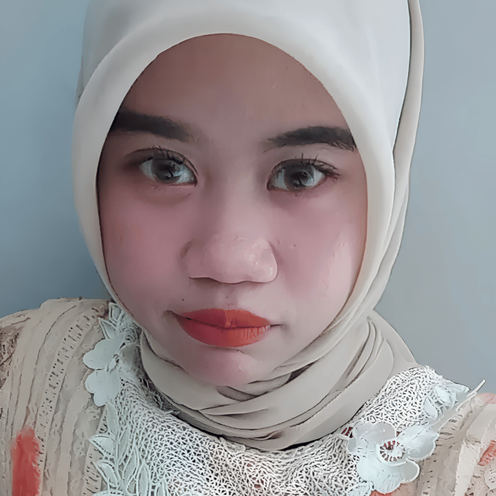

Hi! I'm Khusnul Fikroh Adillah, everyone calls me Adilah — a final-year Information Systems student at Universitas Pamulang with a passion for data analytics and turning raw data into actionable insights.
During my internship at PT Jasa Marga (Persero) Tbk, I built two web-based applications with PHP, MySQL, Bootstrap, and jQuery — an Asset Inventory System and a Contract Monitoring Dashboard. Also helping digitize manual processes for faster, more accurate operations.
On the side, I explore Power BI dashboards and customer segmentation with K-Means clustering in Python. Currently seeking internship or junior roles in Data Analysis / System Analysis.
data & analytics
web dev
tools & methods
Sales Performance Dashboard
An interactive 4-page Power BI dashboard analyzing 2,800+ transaction records — covering total sales, average order value, shipped rate, and regional trends.
Customer Segmentation (K-Means)
Segmented retail customers by purchasing patterns using K-Means clustering, PCA visualization, and z-score outlier removal — turned into targeted marketing recommendations.
Web-Based Asset Inventory System
Multi-level asset categorization, automatic ID generation, Excel export, and an interactive dashboard — built during my internship at PT Jasa Marga.
Contract Monitoring Dashboard (MTN)
A single-view dashboard showing contract summaries, job details, and real-time invoice status — also built during my internship at PT Jasa Marga.
Sistem Manajemen Informasi (Skripsi)
My undergraduate thesis project — a website with booking, inventory, and reporting features, built for Netropolis Gaming Space.
Platform Bahasafy
A semester 7 CMS project built on WordPress, developed from an 11-frame wireframe through to a working platform.
Bakery Sales Analysis
Exploratory dive into a bakery's sales dataset — trends, best-sellers, and timing patterns turned into decisions a real owner could act on.
Aftertaste
A minimalist digital journal for books, films, manga, manhwa, and anime — a cozy personal side project to log and revisit favorite media.
Internship — PT Jasa Marga (Persero) Tbk
Information System Marga Trans Nusantara Internship. Built two web apps to support company operations, designed the underlying MySQL databases, and helped migrate manual paper processes into digital systems.
Published Research Paper
Co-authored "Analisis dan Pengujian Sistem pada Aplikasi Todo Berbasis PHP Menggunakan Metode Agile dan Black-box Testing" with Kaysha Jasmine & Chairul Anwar — Journal of Information Systems and Business Technology.
TOEFL & Competency Exam
Holds a TOEFL certificate from Lembaga Bahasa Universitas Pamulang, and is currently preparing for the Professional Certification Competency Exam (Uji Kompetensi) from Lembaga Sertifikasi Profesi.
Sistem Informasi — Universitas Pamulang
Focus on business process analysis, system implementation, data analytics, and software development, including:
- Business process modeling & system implementation
- Database design & management (MySQL)
- Data analysis & visualization
- Programming & web development (PHP, Python)
- System auditing, testing & quality assurance
- Introduction to Machine Learning & Big Data